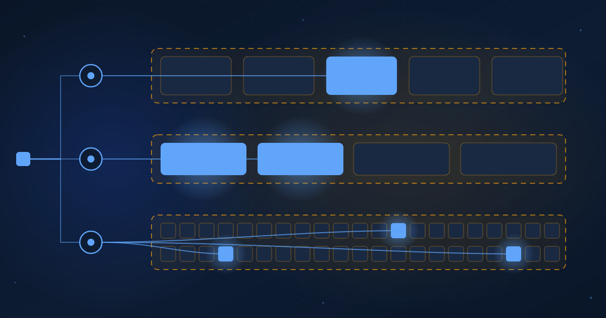

Sparse Everywhere
Capability is now cheaper to route than to grow, and the same bet shows up at every model size.
Ibrahim AbuAlhaol, PhD, P.Eng., SMIEEE
AI Technical Lead
The cheapest way to make a model more capable is no longer to make all of it bigger. It is to make more of it, and run less of it.
Three releases in one week in October showed the same bet at three very different sizes. Reflection's Beam holds 501 billion parameters and runs 23 billion for each token [10]. Mistral Large 4 holds about 1.05 trillion and runs 52 billion [11]. And Google's EmbeddingGemma 2, at 740 million parameters, is built as a 270 million parameter text core with separate vision and audio encoders that its card calls "selectively loadable", so a developer can "load only the modalities required for their use case" [12]. One model is a thousand times larger than another, and they are built on the same idea: hold more than you run, and let the input decide what runs.
That idea has a name inside the model, mixture-of-experts, where a router picks a few specialist blocks for each token and leaves the rest idle. It has no single name at the other scales, but it is the same shape, and this article is about the shape rather than the week. The companion pieces cover what the two sizes cost you and how much of the October evidence you can trust. This one asks why every serious lab now makes the same choice.
Capability is now cheaper to route than to grow. Hold more than you run, and let the input decide what runs. That is one principle, and it is showing up at every altitude of the stack.
Where the bet came from
The idea is older than the transformer. In 1991 Jacobs, Jordan, Nowlan and Hinton trained a set of small networks with a gating network that decided which one should handle each input, and called it a mixture of local experts [1]. It stayed a curiosity until 2017, when Shazeer and colleagues put a sparsely gated expert layer inside a language model, reached 137 billion parameters, and reported capacity gains of up to a thousand times "with only minor losses in computational efficiency" [2]. GShard scaled the recipe to 600 billion in 2020 [3], and the Switch Transformer showed in 2021 that at the same compute budget the sparse model pretrains up to seven times faster [4].
The open-weight turn came in January 2024, when Mixtral 8x7B matched or beat Llama 2 70B while running 13 billion of its 47 billion parameters per token [5]. DeepSeek-V3 then made the modern proportions familiar: 671 billion total, 37 billion active, trained in 2.79 million H800 GPU hours [6]. Through 2025 the total count kept climbing while the active count stayed put: Llama 4 Maverick at 400 billion with 17 active [9], Kimi K2 at a trillion with 32 active [8], and OpenAI's gpt-oss-120b at 117 billion with 5 active [7]. Beam and Mistral Large 4 sit on the same line.
Why routing wins
Two numbers explain the chart. Compute per token scales with the active count, and so does most of the training cost, which is the result the Switch Transformer established [4]. A lab that adds experts adds capacity at a price that tracks the small number, not the big one. The big number costs memory, and memory is paid for once and shared across every request on the machine. At the scale a frontier lab serves, that trade is lopsided in favour of holding more.
There is a second reason that is easier to miss. A dense model spends the same parameters on every token, whether the token is a comma or a line of Rust. A sparse model can send the comma through cheap experts and the Rust through specialist ones. The model is bigger for the same per-token cost, and it spends that cost where the input is hard. Routing is a form of attention paid in parameters instead of tokens, and once you see it that way the pattern stops being a trick of large language models and starts being a general design rule.
Sparse at three altitudes
Look at the three October releases through that rule and they line up as one principle at three heights in the stack.
Inside the model, the experts are held and the router runs a few of them for each token. That is Beam and Mistral Large 4, and every model in Figure 1. At the edge of the model, EmbeddingGemma 2 holds a text core plus vision and audio encoders, and the developer loads only the encoders the workload needs; its card also supports truncating each embedding from 768 to 128 dimensions when the search does not need the precision [12]. The decision is made per modality and per deployment rather than per token, but the shape is the same: more is held than is run. Above the model, a routing layer holds a fleet of models and sends each request to the one that fits, a pattern this series has looked at from two sides: "From Router to Conductor" on what the chooser should be, and "Routing Above the Model" on why the harness around the chooser moves cost further than the choice of model does. There the decision is made per request. At every altitude the same two questions decide the design: what is held, and who chooses what runs.
What it changes for you
If routing is the cheapest way to add capability, then the constraint moves. For a decade the question was how much compute you could afford. The question now is how much you can hold, and how busy you can keep it. Memory is the price of a sparse model, and utilization is the discount; the companion article on the active parameter works through that arithmetic. A team that buys a sparse model and runs it at a third of capacity has bought the big number and received the small one.
The second change is to your own designs. The rule that made these models cheap applies to any system you build on them. Hold the tools, the documents, the specialist models and the prompts you might need. Run only what the request needs. And be explicit about who chooses, because the chooser is where the quality lives: a router that sends everything to the biggest model has recreated a dense system at sparse prices, and a router that sends too much to the smallest has recreated a cheap system with expensive failures. Google made the chooser a configuration flag. Reflection and Mistral made it a learned layer. Your agents will need one too, and it deserves the same care as the models it chooses between.
Conclusion
The 1991 paper's title was "Adaptive Mixtures of Local Experts", and thirty-five years later that is still the most accurate description of where the field has arrived: not one giant mind, but a large collection of local competence and a mechanism for picking from it. The trillion-parameter model and the 740 million parameter one are the same idea with a different chooser.
Expect the total counts to keep climbing and the active counts to stay roughly where they are, because that is the shape the economics reward. Expect the same shape to appear in your inference stack, your retrieval layer and your agent fleet. The labs have already decided that capability is cheaper to route than to grow. The remaining question is whether the systems built on top of their models will make the same decision deliberately, or by accident.
What leaders should do
- Change the sizing question in every model review from "how much compute" to "how much memory, at what utilization". Sparse models move the bottleneck, and a budget built for dense models will buy the wrong hardware.
- Audit your own stack for dense spending: any step that sends every request through the largest model, loads every encoder, or retrieves every document. Each one is a place where a chooser would cut cost without cutting quality.
- Treat the chooser as a product. Give the routing layer an owner, a measured error rate, and an evaluation set, because its mistakes are invisible in the model's benchmark scores and visible in your bill.
- Prefer components that ship modular, the way EmbeddingGemma 2 ships its encoders. A model you can load in parts is a model whose cost you can shape to the workload instead of the other way around.
Related Articles
References & Extended Literature
- Jacobs, R. A., Jordan, M. I., Nowlan, S. J., Hinton, G. E. (1991). "Adaptive Mixtures of Local Experts." Neural Computation 3(1), 79-87. https://doi.org/10.1162/neco.1991.3.1.79
- Shazeer, N., Mirhoseini, A., Maziarz, K., et al. (2017). "Outrageously Large Neural Networks: The Sparsely-Gated Mixture-of-Experts Layer." ICLR 2017. https://arxiv.org/abs/1701.06538
- Lepikhin, D., Lee, H., Xu, Y., et al. (2020). "GShard: Scaling Giant Models with Conditional Computation and Automatic Sharding." ICLR 2021. https://arxiv.org/abs/2006.16668
- Fedus, W., Zoph, B., Shazeer, N. (2021). "Switch Transformers: Scaling to Trillion Parameter Models with Simple and Efficient Sparsity." JMLR 23 (2022). https://arxiv.org/abs/2101.03961
- Jiang, A. Q., Sablayrolles, A., Roux, A., et al. (2024). "Mixtral of Experts." arXiv:2401.04088. https://arxiv.org/abs/2401.04088
- DeepSeek-AI. (2024). "DeepSeek-V3 Technical Report" (671B total, 37B active, 2.788M H800 GPU hours). arXiv:2412.19437. https://arxiv.org/abs/2412.19437
- OpenAI. (2025). "gpt-oss-120b & gpt-oss-20b Model Card" (116.8B total, 5.1B active). arXiv:2508.10925. https://arxiv.org/abs/2508.10925
- Moonshot AI. (2025). "Kimi-K2-Instruct" model card (1T total, 32B activated, 384 experts, 8 selected per token). Hugging Face. https://huggingface.co/moonshotai/Kimi-K2-Instruct
- Meta. (2025, April 5). "The Llama 4 herd: The beginning of a new era of natively multimodal AI innovation" (Maverick: 17B active, 128 experts, 400B total). Meta AI Blog. https://ai.meta.com/blog/llama-4-multimodal-intelligence/
- Reflection AI. (2026, October 5). "Introducing Beam: Reflection's 501B open-weight model." Reflection AI Blog. https://reflection.ai/blog/introducing-beam
- Mistral AI. (2026, October 6). "Mistral Large 4" model page (52B active, 1.05T total, 1.6B vision encoder). Mistral Docs. https://docs.mistral.ai/models/mistral-large-4-0
- Google DeepMind. (2026). "google/embeddinggemma-2" model card (270M text backbone, selectively loadable 170M vision and 300M audio encoders, truncation to 128d). Hugging Face. https://huggingface.co/google/embeddinggemma-2